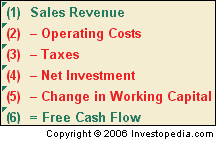
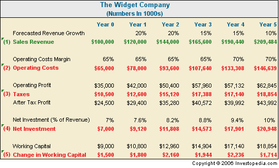
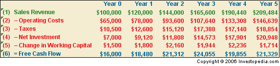

It can be hard to understand how stock analysts come up with "fair value" for companies, or why their target price estimates vary so wildly. The answer often lies in how they use the valuation method known as discounted cash flow (DCF). However, you don't have to rely on the word of analysts. With some preparation and the right tools, you can value a company's stock yourself using this method. This tutorial will show you how, taking you step-by-step through a discounted cash flow analysis of a fictional company.
In simple terms, discounted cash flow tries to work out the value of a company today, based on projections of how much money it's going to make in the future. DCF analysis says that a company is worth all of the cash that it could make available to investors in the future. It is described as"discounted" cash flow because cash in the future is worth less than cash today. (To learn more, see The Essentials Of Cash Flow and Taking Stock Of Discounted Cash Flow.)
For example, let's say someone asked you to choose between receiving $100 today and receiving $100 in a year. Chances are you would take the money today, knowing that you could invest that $100 now and have more than $100 in a year's time. If you turn that thinking on its head, you are saying that the amount that you'd have in one year is worth $100 dollars today - or the discounted value is $100. Make the same calculation for all the cash you expect a company to produce in the future and you have a good measure of the company's value.
There are several tried and true approaches to discounted cash flow analysis, including the dividend discount model (DDM) approach and the cash flow to firm approach. In this tutorial, we will use the free cash flow to equity approach commonly used by Wall Street analysts to determine the "fair value" of companies.
As an investor, you have a lot to gain from mastering DCF analysis. For starters, it can serve as a reality check to the fair value prices found in brokers' reports. DCF analysis requires you to think through the factors that affect a company, such as future sales growth and profit margins. It also makes you consider the discount rate, which depends on a risk-free interest rate, the company's costs of capital and the risk its stock faces. All of this will give you an appreciation for what drives share value, and that means you can put a more realistic price tag on the company's stock.
To demonstrate how this valuation method works, this tutorial will take you step-by-step through a DCF analysis of a fictional company called The Widget Company. Let's begin by looking at how to determine the forecast period for your analysis and how to forecast revenue growth.
The Forecast Period
The first order of business when doing discounted cash flow (DCF) analysis is to determine how far out into the future we should project cash flows.
For the purposes of our example, we'll assume that The Widget Company is growing faster than the gross domestic product (GDP) expansion of the economy. During this "excessive return" period, The Widget Company will be able to earn returns on new investments that are greater than its cost of capital. So, o
The excess return period tells us how far into the future we should forecast the company's cash flows. Alas, it's impossible to say exactly how long this period of excess returns will last. The best we can do is make an educated guess based on the company's competitive and market position. Sooner or later, all companies settle into maturity and slower growth. (The common practice with DCF analysis is to make the excess return period the forecast period. But it is important to note that this valuation method does not restrict your analysis to only excess return periods - you could estimate the value of a company growing slower than the economy using DCF analysis too.)
The table below shows good guidelines to use when determining a company's excess return period/forecast period:
|
How far in the future should we forecast The Widget Company's cash flows? Let's assume that the company is keeping itself busy meeting the demand for its widgets. Thanks to strong marketing channels and upgraded, efficient factories, the company has a reasonable competitive position. There is enough demand for widgets to maintain five years of strong growth, but after that the market will be saturated as new competitors enter the market. So, we will project cash flows for the next five years of business.
Revenue Growth Rate
We have decided that we want to estimate the free cash flow that The Widget Company will produce over the next five years. To arrive at this figure, the standard procedure is to forecast revenue growth over that time period. Then (as we will see in later chapters), by breaking down after-tax operating profits, estimated capital expenditure and working capital needs, we can estimate the cash flow the company will produce.
Let's start with top line growth. Forecasting a company's revenues is arguably the most important assumption one can make about its future cash flows. It can also be the most difficult assumption to make. (For more on forecasting sales, see Great Expectations: Forecasting Sales Growth.)
We need to think carefully about what the industry and the company could look like as they evolve in the future. When forecasting revenue growth, we need to consider a wide variety of factors. These include whether the company's market is expanding or contracting, and how its market share is performing. We also need to consider whether there are any new products driving sales or whether pricing changes are imminent. But because that future can never be certain, it is valuable to consider more than one possible outcome for the company.
First, the upbeat revenue growth scenario: The Widget Company has grown revenues at 20% for the past two years, and your careful market research suggests that demand for widgets will not let up any time soon. Management - always optimistic - argues that the company will keep growing at 20%.
That being said, there may be reasons to downplay revenue growth expectations. While the company's revenue growth will stay strong in the first few years, it could slow to a lower rate by Year 5 as a result of increasing international competition and industry commoditization. We should err on the side of caution and conservatism and assume that The Widget Company's top line growth rate profile will commence at 20% for the first two years, then drop to 15% for the next two years and finally drop to 10% in Year 5. Posting $100 million of revenue in its latest annual report, the company is projected to grow its revenues to $209.5 million at the end of five years (based on realistic, rather than optimistic, growth expectations).
Growth Rate Revenue - $100 M 20% $120 M 20% $144 M 20% $172.8 M 20% $207.4 M 20% $248.9 M Growth Rate Revenue - $100 M 20% $120 M 20% $144 M 15% $165.6 M 15% $190.4 M 10% $209.5 M Forecast Revenue Growth Profiles
Figure 2Current Year Year 1 Year 2 Year 3 Year 4 Year 5 Optimistic:
Realistic:
Now that we've determined our forecast period and our revenue growth for that period, we can move on to the next step in our analysis, where we will estimate the free cash flow produced over the forecast period.
Now that we have determined revenue growth for our forecast period of five years, we want to estimate the free cash flow produced over the forecast period.
Free cash flow is the cash that flows through a company in the course of a quarter or a year once all cash expenses have been taken out. Free cash flow represents the actual amount of cash that a company has left from its operations that could be used to pursue opportunities that enhance shareholder value - for example, developing new products, paying dividends to investors or doing share buybacks. (To learn more, see Free Cash Flow: Free, But Not Always Easy.)
Calculating Free Cash Flow
We work out free cash flow by looking at what's left over from revenues after deducting operating costs, taxes, net investment and the working capital requirements (see Figure 1). Depreciation and amortization are not included since they are non-cash charges. (For more information, see Understanding The Income Statement.)
|

Figure 1 - How free cash flow is calculated |
In the previous chapter, we forecasted The Widget Company's revenues over the next five years. Here we show you how to project the other items in our calculation over that period.
Future Operating Costs
When doing business, a company incurs expenses - such as salaries, cost of goods sold (CoGS), selling and general administrative expenses (SGA), and research and development (R&D). These are the company's operating costs. If current operating costs are not explicitly stated on a company's income statement, you can calculate them by subtracting net operating profits - or earnings before interest and taxation (EBIT) - from total revenues.
A good place to start when forecasting operating costs is to look at the company's historic operating cost margins. The operating margin is operating costs expressed as a proportion of revenues.
For three years running, The Widget Company has generated an average operating cost margin of 70%. In other words, for every $1 of revenue, the company incurs $0.70 in operating costs. Management says that its cost cutting program will push those margins down to 60% of revenues over the next five years.
However, as analysts and investors, we should be concerned that competing widget factories might be built, thus squeezing The Widget Company's profitability. Therefore, as we did when forecasting revenues, we will err on the side of conservatism and assume that operating costs will show an increase as a percentage of revenues as the company is forced to lower its prices to stay competitive over time. Let's say operating costs will hold at 65% of revenues over the first three projected years, but will increase to 70% in Year 4 and Year 5 (see Figure 2).
Taxation
Many companies do not actually pay the official corporate tax rate on their operating profits. For instance, companies with high capital expenditures receive tax breaks. So, it makes sense to calculate the tax rate by taking the average annual income tax paid over the past few years divided by profits before income tax. This information is available on the company's historic income statements.
Let's assume that for each of the past three years, The Widget Company paid 30% income tax. We will project that the company will continue to pay that 30% tax rate over the next five years (see Figure 2).
Net Investment
To underpin growth, companies need to keep investing in capital items such as property, plants and equipment. You can calculate net investment by taking capital expenditure, disclosed in a company's statement of cash flows, and subtracting non-cash depreciation charges, found on the income statement.
Let's say The Widget Company spent $10 million last year on capital expenditures, with depreciation of $3 million, giving net investment of $7 million, or 7% of total revenues (see Figure 2). But in the two prior years, the company's net investment was much higher: 10% of revenues.
If competition does intensify in the widget industry, The Widget Company will almost certainly have to boost capital investment to stay ahead. So, we will assume that net investment will steadily return to its normal level of 10% of sales over the next five years, as seen in Figure 2: 7.6% of sales in Year 1, 8.2% in Year 2, 8.8% in Year 3, 9.4% in Year 4 and 10% in Year 5.
|

Figure 2 - Forecasting The Widget Company\'s operating costs, taxes, net investment and change in working capital over the five-year forecast period |
Change in Working Capital
Working capital refers to the cash a business requires for day-to-day operations, or, more specifically, short-term financing to maintain current assets such as inventory. The faster a business expands, the more cash it will need for working capital and investment.
Working capital is calculated as current assets minus current liabilities. These items are found on the company's balance sheet, published in its quarterly and annual financial statements. At year end, The Widget Company's balance sheet showed current assets of $25 million and current liabilities of $16 million, giving net working capital of $9 million.
Net change in working capital is the difference in working capital levels from one year to the next. When more cash is tied up in working capital than the previous year, the increase in working capital is treated as a cost against free cash flow.
Working capital typically increases as sales revenues grow, so a bigger investment of inventory and receivables will be needed to match The Widget Company's revenue growth. In our forecast, we will assume that changes in working capital are proportional to revenue growth. In other words, if revenues grow by 20% in the first year, working capital requirements will grow by 20% in the first year, from $9 million to $10.8 million (see Figure 2). Meanwhile, we will keep a close watch for any signs of a changing trend.
Figure 3 - Free cash flow forecast calculation for The Widget Company

As you can see in Figure 3, we've determined our estimated free cash flow for our forecast period. Now we are one step closer to finding a value for the company. In the next section of the tutorial, we will estimate the value at which we will discount the free cash flows.
Having projected the company's free cash flow for the next five years, we want to figure out what these cash flows are worth today. That means coming up with an appropriate discount rate which we can use to calculate the net present value (NPV) of the cash flows.
So, how do we figure out the company's discount rate? That's a crucial question, because a difference of just one or two percentage points in the cost of capital can make a big difference in a company's fair value.
A wide variety of methods can be used to determine discount rates, but in most cases, these calculations resemble art more than science. Still, it is better to be generally correct than precisely incorrect, so it is worth your while to use a rigorous method to estimate the discount rate.
A good strategy is to apply the concepts of the weighted average cost of capital (WACC). The WACC is essentially a blend of the cost of equity and the after-tax cost of debt. (For more information, see Investors Need A Good WACC.) Therefore, we need to look at how cost of equity and cost of debt are calculated.
Cost of Equity
Unlike debt, which the company must pay at a set rate of interest, equity does not have a concrete price that the company must pay. But that doesn't mean that there is no cost of equity. Equity shareholders expect to obtain a certain return on their equity investment in a company. From the company's perspective, the equity holders' required rate of return is a cost, because if the company does not deliver this expected return, shareholders will simply sell their shares, causing the price to drop.
Therefore, the cost of equity is basically what it costs the company to maintain a share price that is satisfactory (at least in theory) to investors. The most commonly accepted method for calculating cost of equity comes from the Nobel Memorial Prize-winning capital asset pricing model (CAPM), where: Cost of Equity (Re) = Rf + Beta (Rm-Rf).
Let's explain what the elements of this formula are:
Rf - Risk-Free Rate - This is the amount obtained from investing in securities considered free from credit risk, such as government bonds from developed countries. The interest rate of U.S. Treasury bills or the long-term bond rate is frequently used as a proxy for the risk-free rate.
ß - Beta - This measures how much a company's share price moves against the market as a whole. A beta of one, for instance, indicates that the company moves in line with the market. If the beta is in excess of one, the share is exaggerating the market's movements; less than one means the share is more stable. Occasionally, a company may have a negative beta (e.g. a gold mining company), which means the share price moves in the opposite direction to the broader market. (To learn more, see Beta: Know The Risk.)
(Rm – Rf) = Equity Market Risk Premium - The equity market risk premium (EMRP) represents the returns investors expect, over and above the risk-free rate, to compensate them for taking extra risk by investing in the stock market. In other words, it is the difference between the risk-free rate and the market rate. It is a highly contentious figure. Many commentators argue that it has gone up due to the notion that holding shares has become riskier.
Barra and Ibbotson are valuable subscription services that offer up-to-date equity market risk premium rates and betas for public companies.
Once the cost of equity is calculated, adjustments can be made to take account of risk factors specific to the company, which may increase or decrease the risk profile of the company. Such factors include the size of the company, pending lawsuits, concentration of customer base and dependence on key employees. Adjustments are entirely a matter of investor judgment and they vary from company to company.
Cost of Debt
Compared to cost of equity, cost of debt is fairly straightforward to calculate. The rate applied to determine the cost of debt (Rd) should be the current market rate the company is paying on its debt. If the company is not paying market rates, an appropriate market rate payable by the company should be estimated.
As companies benefit from the tax deductions available on interest paid, the net cost of the debt is actually the interest paid less the tax savings resulting from the tax-deductible interest payment. Therefore, the after-tax cost of debt is Rd (1 - corporate tax rate).
Finally, Capital Structure
The WACC is the weighted average of the cost of equity and the cost of debt based on the proportion of debt and equity in the company's capital structure. The proportion of debt is represented by D/V, a ratio comparing the company's debt to the company's total value (equity + debt). The proportion of equity is represented by E/V, a ratio comparing the company's equity to the company's total value (equity + debt). The WACC is represented by the following formula: WACC = Re x E/V + Rd x (1 - corporate tax rate) x D/V.
A company's WACC is a function of the mix between debt and equity and the cost of that debt and equity. On the one hand, in the past few years, falling interest rates have reduced the WACC of companies. On the other hand, corporate disasters like those at Enron and WorldCom have increased the perceived risk of equity investments.
Be warned: the WACC formula seems easier to calculate than it really is. Rarely will two people derive the same WACC, and even if two people do reach the same WACC, all the other applied judgments and valuation methods will likely ensure that each has a different opinion regarding the components that comprise the company's value.
Widget Company WACC
Returning to our example, let's suppose The Widget Company has a capital structure of 40% debt and 60% equity, with a tax rate of 30%. The borrowing rate (Rd) on the company's debt is 5%. The risk-free rate (Rf) is 5%, the beta is 1.3 and the risk premium (Rp) is 8%. The WACC comes to 10.64%. So, rounded up to the nearest percentage, the discount rate for The Widget Company would be 11% (see Figure 1).
| WACC for The Widget Company
Figure 1 |
In the next section of the tutorial, we'll do the final calculations to generate a fair value for the Widget Company.
Now that we have calculated the discount rate for the Widget Company, it's time to do the final calculations to generate a fair value for the company's equity.
Calculate the Terminal Value
Having estimated the free cash flow produced over the forecast period, we need to come up with a reasonable idea of the value of the company's cash flows after that period - when the company has settled into middle-age and maturity. Remember, if we didn't include the value of long-term future cash flows, we would have to assume that the company stopped operating at the end of the five-year projection period.
The trouble is that it gets more difficult to forecast cash flows over time. It's hard enough to forecast cash flows over just five years, never mind over the entire future life of a company. To make the task a little easier, we use a "terminal value" approach that involves making some assumptions about long-term cash flow growth.
Gordon Growth Model
There are several ways to estimate a terminal value of cash flows, but one well-worn method is to value the company as a perpetuity using the Gordon Growth Model. The model uses this formula:
(Discount Rate – Long-Term Cash Flow Growth Rate)Terminal Value = Final Projected Year Cash Flow X (1+Long-Term Cash Flow Growth Rate)
The formula simplifies the practical problem of projecting cash flows far into the future. But keep in mind that the formula rests on the big assumption that the cash flow of the last projected year will stabilize and continue at the same rate forever. This is an average of the growth rates, not one expected to occur every year into perpetuity. Some growth will be higher or lower, but the expectation is that future growth will average the long-term growth assumption.
Returning to the Widget Company, let's assume that the company's cash flows will grow in perpetuity by 4% per year. At first glance, 4% growth rate may seem low. But seen another way, 4% growth represents roughly double the 2% long-term rate of the U.S. economy into eternity.
In the section on "Forecasting Free Cash Flows", we forecast free cash flow of $21.3 million for Year 5, the final or "terminal" year in our Widget Company projections. You will also recall that we calculated The Widget Company's discount rate as 11% (see "Calculating The Discount Rate"). We can now calculate the terminal value of the company using the Gordon Growth Model:
Widget Company Terminal Value = $21.3M X 1.04/ (11% - 4%) = $316.9M
Exit Multiple Model
Another way to determine a terminal value of cash flows is to use a multiplier of some income or cash flow measure, such as net income, net operating profit, EBITDA (earnings before interest, taxes, depreciation, and amortization), operating cash flow or free cash flow. The multiple is generally determined by looking at how comparable companies are valued by the market. Was there a recent sale of stock of a similar company? What is the standard industry valuation for a company at the same stage of maturity?
In Year 5, the Widget Company is expected to produce free cash flow of $21.3M. Multiplying this by a projected price-to-free cash flow of 15 gives us a terminal value of $319.9M.
Widget Company Terminal Value = $21.3M X 15 = $319.9M
You will see that the terminal value can contribute a great deal to total value, so it is important to use an exit multiple that can be justified. One way to make the multiple more believable is to give estimates on the conservative side. Justifying a multiple of 15 with your figures would certainly be easier to justify than one at 20 or 25. Because it can be tricky to justify the multiple, this method isn't used as much as the Gordon Growth Model.
Calculating Total
Now you have the following free cash flow projection for the Widget Company.
|
To arrive at a total company value, or enterprise value (EV), we simply have to take the present value of the cash flows, divide them by the Widget Company's 11% discount rate and, finally, add up the results.
| EV = ($18.5M/1.11) + ($21.3M/(1.11)2) + ($24.1M/(1.11)3) + ($19.9M/(1.11)4) + ($21.3M/(1.11)5) + ($316.9M/(1.11)5)
EV = $265.3M |
Calculating the Fair Value of Equity
But we are not finished yet - we cannot forget about debt. The Widget Company's $265.3M enterprise value includes the company's debt. As equity investors, we are interested in the value of the company's shares alone. To come up with a fair value of the company's equity, we must deduct its net debt from the value.
Let's say The Widget Company has $50M in net debt on its balance sheet. We subtract that $50M from the company's $265.3M enterprise value to get the equity value.
| Fair Value of Widget Company Equity = Fair Value of Widget Company = $265.3M - $50M =$215.3M |
So, by our calculations, the Widget Company's equity has a fair value of $215.3 million. That's it - the DCF valuation is complete.
Having finished the DCF valuation, we can judge the merits of buying Widget Company shares. If we divide the fair value by the number of Widget Company shares outstanding, we get a fair value for the company's shares. If the shares are trading at a lower value than this, they could represent a buying opportunity for investors. If they are trading higher than the per share fair value, shareholders may want to consider selling Widget Company stock.
You are familiar with the mechanics of DCF analysis and you have seen it applied to a practical example; now it's time to consider the strengths and weaknesses of this valuation tool. What makes DCF better than other valuation methods? What are its shortcomings? We answer those questions in the following section of this tutorial.
Having worked our way through the mechanics of discounted cash flow analysis, it is worth our while to examine the method's strengths and weaknesses. There is a lot to like about the valuation tool, but there are also reasons to be cautious about it.
Advantages
Arguably the best reason to like DCF is that it produces the closest thing to an intrinsic stock value. The alternatives to DCF are relative valuation measures, which use multiples to compare stocks within a sector. While relative valuation metrics such as price-earnings (P/E), EV/EBITDA and price-to-sales ratios are fairly simple to calculate, they aren't very useful if an entire sector or market is over or undervalued. A carefully designed DCF, by contrast, should help investors steer clear of companies that look inexpensive against expensive peers. (To learn more, see Relative Valuation: Don't Get Trapped.)
Unlike standard valuation tools such as the P/E ratio, DCF relies on free cash flows. For the most part, free cash flow is a trustworthy measure that cuts through much of the arbitrariness and "guesstimates" involved in reported earnings. Regardless of whether a cash outlay is counted as an expense or turned into an asset on the balance sheet, free cash flow tracks the money left over for investors.
Best of all, you can also apply the DCF model as a sanity check. Instead of trying to come up with a fair value stock price, you can plug the company's current stock price into the DCF model and, working backwards, calculate how quickly the company would have to grow its cash flows to achieve the stock price. DCF analysis can help investors identify where the company's value is coming from and whether or not its current share price is justified.
Disadvantages
Although DCF analysis certainly has its merits, it also has its share of shortcomings. For starters, the DCF model is only as good as its input assumptions. Depending on what you believe about how a company will operate and how the market will unfold, DCF valuations can fluctuate wildly. If your inputs - free cash flow forecasts, discount rates and perpetuity growth rates - are wide of the mark, the fair value generated for the company won't be accurate, and it won't be useful when assessing stock prices. Following the "garbage in, garbage out" principle, if the inputs into the model are "garbage", then the output will be similar.
DCF works best when there is a high degree of confidence about future cash flows. But things can get tricky when a company's operations lack what analysts call "visibility" - that is, when it's difficult to predict sales and cost trends with much certainty. While forecasting cash flows a few years into the future is hard enough, pushing results into eternity (which is a necessary input) is nearly impossible. The investor's ability to make good forward-looking projections is critical - and that's why DCF is susceptible to error.
Valuations are particularly sensitive to assumptions about the perpetuity growth rates and discount rates. Our Widget Company model assumed a cash flow perpetuity growth rate of 4%. Cut that growth to 3%, and the Widget Company's fair value falls from $215.3 million to $190.2 million; lift the growth to 5% and the value climbs to $248.7 million. Likewise, raising the 11% discount rate by 1% pushes the valuation down to $182.7 million, while a 1% drop boosts the Widget Company's value to $258.9 million.
DCF analysis is a moving target that demands constant vigilance and modification. A DCF model is never built in stone. If the Widget Company delivers disappointing quarterly results, if its major customer files for bankruptcy, or if interest rates take a dramatic turn, you will need to adjust your inputs and assumptions. If any time expectations change, the fair value will change.
That's not the only problem. The model is not suited to short-term investing. DCF focuses on long-term value. Just because your DCF model produces a fair value of $215.3 million that does not mean that the company will trade for that any time soon. A well-crafted DCF may help you avoid buying into a bubble, but it may also make you miss short-term share price run-ups that can be profitable. Moreover, focusing too much on the DCF may cause you to overlook unusual opportunities. For example, Microsoft seemed very expensive back in 1995, but its ability to dominate the software market made it an industry powerhouse and an investor's dream soon after.
DCF is a rigorous valuation approach that can focus your mind on the right issues, help you see the risk and help you separate winning stocks from losers. But bear in mind that while the DCF technique we've sketched out can help reduce uncertainty, it won't make it disappear.
What's clear is that investors should be conservative about their inputs and should not resist changing them when needed. Aggressive assumptions can lead to inflated values and cause you to pay too much for a stock. The best way forward is to examine valuation from a variety of perspectives. If the company looks inexpensive from all of them, chances are better that you have found a bargain.
As you have seen, DCF analysis tries to work out the value of a company today, based on projections of how much money it will generate in the future. The basic idea is that the value of any company is the sum of the cash flows that it produces in the future, discounted to the present at an appropriate rate.
In this tutorial, we have shown you the basic technique used to generate fair values for the stocks that you follow. But keep in mind that this is just one approach to doing DCF analysis; every analyst has his or her own theories on how it should be done.
Although manually working your way through all the numbers in DCF analysis can be a time-consuming and tricky process at times, it's not impossible. Yes, using a DCF model probably entails a lot more work than relying on traditional valuation measures such as the P/E ratio, but we hope this step-by-step guide has shown you that it is worth the effort.
DCF analysis treats a company as a business rather than just a ticker symbol and a stock price, and it requires you to think through all the factors that will affect the company's performance. What DCF analysis really gives you is an appreciation for what drives stock values.
Here are some external resources that you may want to check out:
Damodaran Online - Aswarth Damodaran, professor of finance at
Valuing Intel: A Strange Tale Of Analysts And Announcements - Bradford Cornell, professor at UCLA's Anderson Graduate School of Management, has produced an excellent DCF analysis that assesses market and stock analysts' reactions to an Intel Corp. earnings announcement.
{kind=link}
{kind=link}
{kind=link}